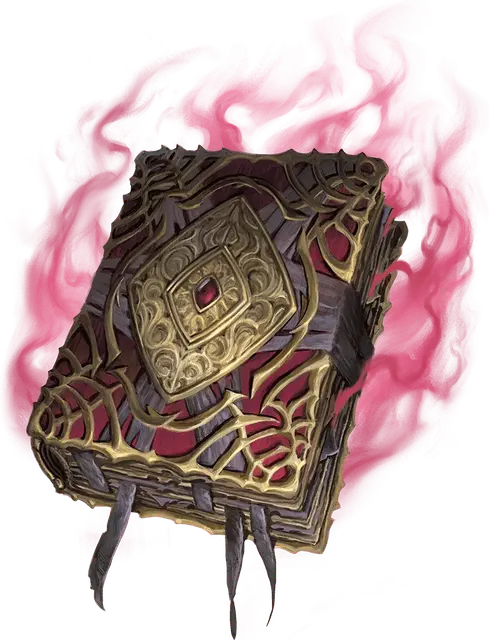

Книга мерзкой тьмы
Book of Vile Darkness
Чудесный предмет, артефакт (требуется настройка)

Содержания этого проклятого манускрипта алчут и жаждут злые души. В нём хранятся знания настолько ужасные, что даже мельком взглянув на исписанные страницы, можно навлечь на себя злой рок.
Большинство считает, что книгу создал божество-лич Векна. На её страницы он записал каждую мерзкую мысль, каждое порочное стремление и каждый пример злой магии, которые ему удавалось найти или изобрести.
Другие практики зла добавили в книгу и собственные записи. Их дополнения явно видны: поздние авторы пришили свои тексты к трактату, а в некоторых случаях вносили пометки и дополнения в уже существующие строки. В отдельных местах страницы отсутствуют, порваны или настолько покрыты чернилами, кровью и царапинами, что первоначальный текст невозможно прочесть.
Природа не может вынести присутствия этой книги. Обычные растения засыхают вблизи её, обычные животные не желают к ней приближаться, а сама книга постепенно разрушает всё, что касается. Даже камень трескается и превращается в пыль, если книга лежит на нём достаточно долго.
Каждый раз, когда существо, за исключением Исчадий и Нежити, настраивается на Книгу мерзкой тьмы, оно должно совершить спасбросок Харизмы Сл 17. При провале существо магическим образом превращается в Ларву под контролем Мастера. Только заклинание Желание может отменить это мерзкое превращение.
Настроенное на книгу существо должно потратить 80 часов на её чтение и изучение, только после этого усваивая содержимое и получая преимущества свойств Изменённые характеристики, Неустанная форма, Заклинания, Отвратительные знания и Гнусная речь.
Книга мерзкой тьмы остаётся с вами лишь до тех пор, пока вы стремитесь творить зло в мире. Если вы не совершите хотя бы одно злоумышленное действие в течение 10 дней, или если вы добровольно совершите благое деяние, книга исчезает, ваша Настройка на неё немедленно прекращается, и вы теряете все выгоды, полученные от неё. Если вы умрёте, будучи настроенным на книгу, душу захватывает существо великой злобы. Вы не сможете быть воскрешены никаким способом, пока ваша душа останется в плену.
Изменённые характеристики. Значение одной из ваших характеристик по вашему выбору увеличивается на 2, но не выше 24. Значение одной другой характеристики по вашему выбору уменьшается на 2, но не ниже 3. Книга больше не может изменять ваши характеристики.
Неустанная форма. Пока книга находится у вас, вы обладаете Иммунитетом к состоянию Истощение.
Случайные свойства. Книга мерзкой тьмы обладает следующими случайными свойствами:
3 малых положительных свойства
1 основное положительное свойство
3 малых отрицательных свойства
2 основных отрицательных свойства
Заклинания. Пока вы настроены на книгу, вы можете сотворять с её помощью следующие заклинания (Сл спасброска 18):
Как только вы сотворите заклинание с помощью книги, вы не можете снова сотворить это заклинание с помощью книги до следующего рассвета.
Отвратительные знания. Вы можете сверяться с Книгой мерзкой тьмы при проверках Интеллекта для воспоминания сведений об аспектах зла, например, о демонах. При этом вы совершаете эту проверку с Преимуществом.
По усмотрению Мастера книга может раскрыть тайны, которые не должны знать смертные, такие как истинные имена могущественных Исчадий, мерзкие обряды, позволяющие превратиться в рыцаря смерти или лича, или давно забытые заклинания, созданные существами настолько злыми, что их имена не следует произносить вслух.
Гнусная речь. Пока книга находится у вас, вы можете действием Магия прочитать с её страниц слова на извращённом, мёртвом языке. Каждый раз, когда вы это делаете, вы получаете 1к12 Психического урона, а каждое существо в пределах 15 футов от вас получает 3к6 Психического урона, если не является Исчадием или Нежитью.
Уничтожение книги. Книга мерзкой тьмы позволяет вырывать из неё страницы, но злые знания, содержащиеся на этих страницах, со временем возвращаются в книгу — обычно когда новый автор добавляет новые тексты в трактат.
Если солар разорвёт книгу надвое, она будет уничтожена на 1к100 лет, после чего воссоздастся в каком-нибудь далёком уголке мультивселенной.
Если существо настроено на книгу в течение 100 лет, оно может обнаружить в оригинальном тексте скрытую фразу, которая, будучи переведённой на Небесный язык и произнесённой вслух, уничтожит вспышкой сияния как говорящего, так и книгу. Однако если зло ещё существует во вселенной, книга воссоздастся через 1к10 × 100 лет.